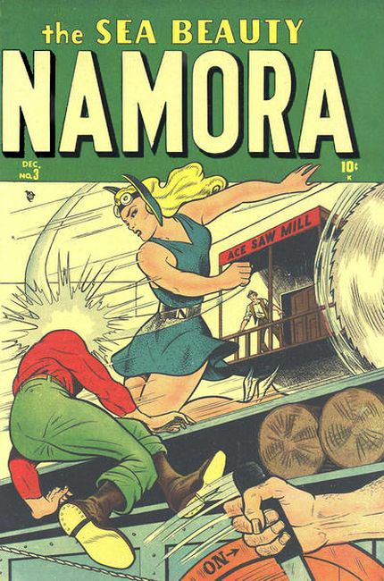

Series: 3 issues 1948
Publisher: Marvel
Written by Bill Woolfolk
Illustrations by Ken Bald, Bill Everett
- "The Lost City of Yucatan" Namora stops Big Jim Derry from stealing the treasures of the Mayans.
- "The Kingdom Beneath the Sea" When a sunken ship comes to rest near the city of Mu, the ambitious Karlak rouses his countrymen to conquer the primitive surface dwellers. Fortunately, Namora and Namor foil his plans.
- "Shadow Over Shanghai" Namor foils diamond thieves in Shanghai.
- "Terror In Turkey" The Prime Minister's daughter, Magda, asks her friend Namora to investigate the murders of the Ministers of Finance, Agriculture, War, the Undersecretary of the Interior, Ministers of Labor, Justice, Records, and Foreign Affairs of Turkey.
- "Curtain Call for Crime" The Blonde Phantom discovers why someone hired old vaudevillians to rehearse in an abandoned theater.
- "Doomed In the Desert" Tut-ak-Mun revives the mummies of the Pharaohs of Egypt, using the ring of Tut-Ak-Aken.
- "Dressed To Kill!" Namora and Betty persuade Namor to wear a tuxedo to a publishers' testimonial dinner in his honor. What he doesn't know is that the publishers have decided to make Namor more comfortable at the dinner, so they wear swim trunks!

- "The Mystery of the Sleeping Ship!" Namora solves the mystery of the Ghost of the Fog.
- "The Last of the Vikings" Descendants of 13th Century Vikings raid the North American coast.
- "Some Fish Story!" Namor helps a hapless sport fisherman.
- "Terror Rides the Waves!" The Gull Rock lighthouse keeper, Ezra Hanson, often recalls bitterly the loss of his ship, Susan B, on the Crooked Foot Rocks. His complaints about the poverty he and his daughter Mary share give Jim Torrance an idea.
- "Dummy Run" text story by Stan Lee.